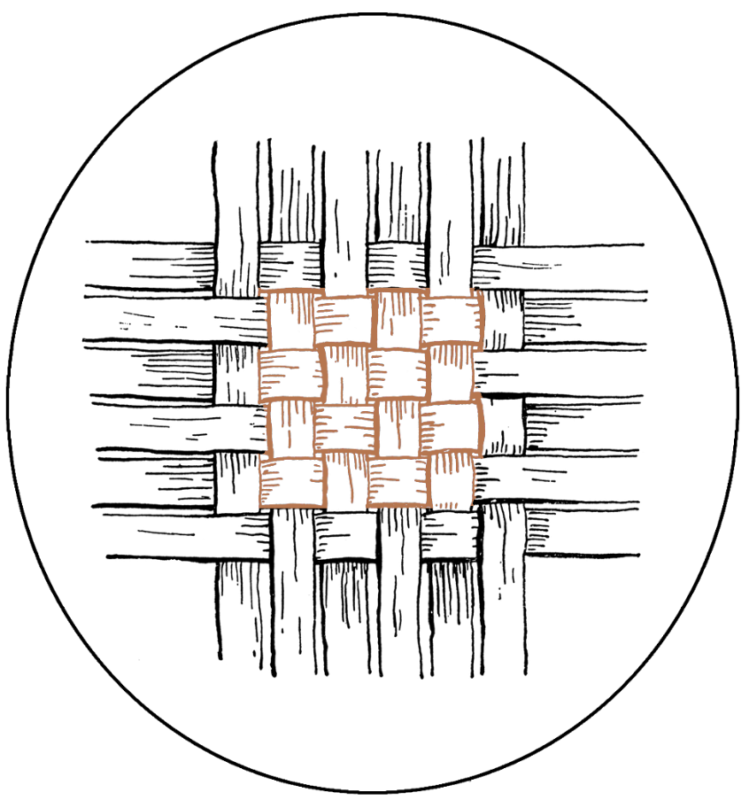

Ningún donde
(Poemas)
- Cuando el otoño como ahora
- Mi ciudad no tiene mar
- Eludible como toda disputa
- Jamás hice volar con mis manos
- Es hermoso tener un pasado
- Cuando se ha sido
- Tres años después
- Porque nunca guardé otra fe
- No quedan tras el amor confidencias
- Mienten quienes dicen que el odio no reconforta
- Me iría de aquí si pudiera
- Aunque todo ya se haya dicho
- Son siempre las mismas verdades
- Estéril es el llanto que se vierte
- Hay maneras de golpear a un hombre
- Te recordé en ciudades
- Entre las iglesias
- Todavía habrá quien diga
- Cuando mi día esté cerca
- Árboles y hombres
- La madera del cerezo y el amor
- Todo esto hemos amado y es inmenso
- Te advierto
- Mi madre, orgullosa, sin duda
- Tantas y tantas almas
- Te encantaban los nombres de los pueblos
- En honor de aquella virtud